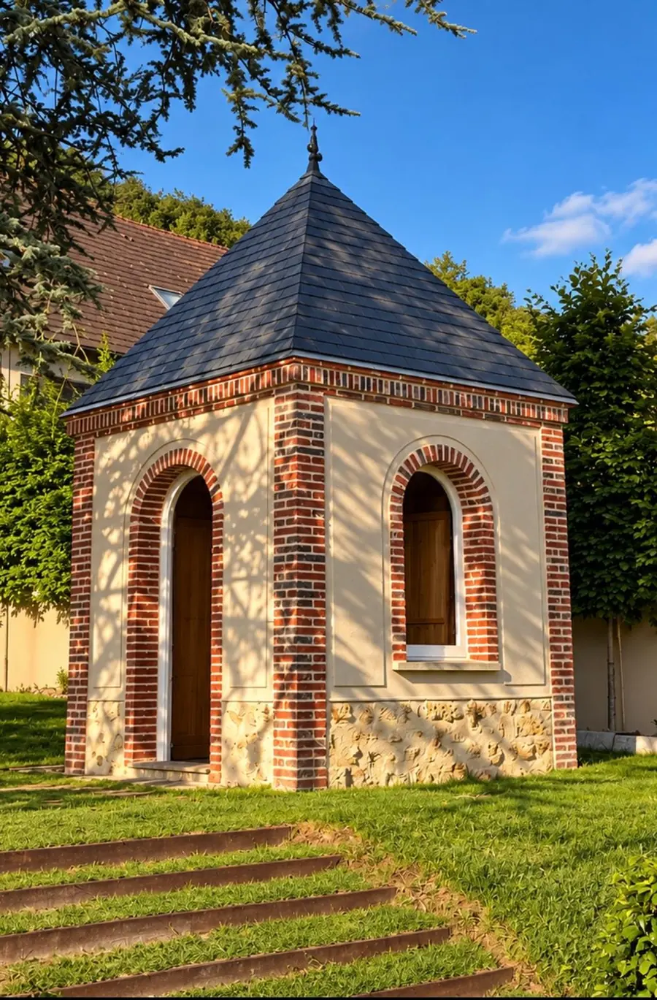
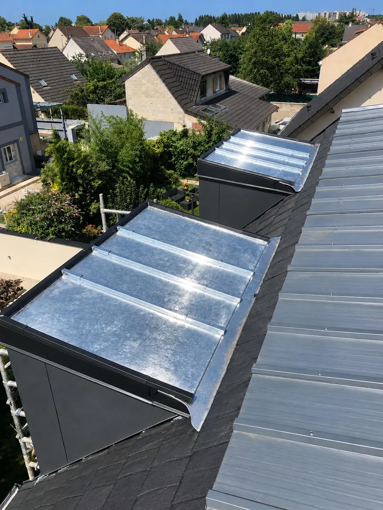
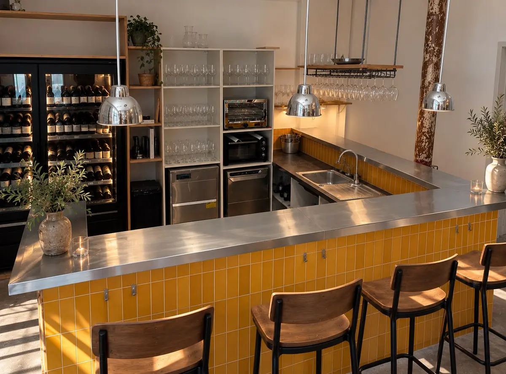

Couverture zinc
Comprendre les formes de couverture en zinc, les raccords et les questions à poser avant une rénovation.
Couverture zinc à Vincennes →Artisan couvreur-zingueur · Vincennes & Est parisien
Couverture, zinguerie et rénovation de toiture : chaque détail compte pour protéger un bâtiment et respecter son caractère.
Une entreprise artisanale basée à Champs-sur-Marne, avec Vincennes comme premier secteur de développement.
La sécurité prime sur tous nos chantiers. Elle se prépare avant toute intervention en toiture.
Notre métier
La couverture protège le bâtiment ; la zinguerie guide l’eau autour des cheminées, des lucarnes, des noues et des rives. Nous abordons ces ouvrages comme un ensemble, depuis l’observation du toit jusqu’au choix des reprises à effectuer.
À Vincennes, la diversité des toitures demande de regarder chaque bâtiment pour ce qu’il est : une couverture en zinc, un pan en tuile, une lucarne à reprendre ou un raccord qui a perdu son étanchéité.
Nos savoir-faire
Choisissez le sujet qui correspond à votre besoin. Chaque page détaille les travaux concernés et renvoie vers la vue d’ensemble de notre intervention à Vincennes.
Comprendre les formes de couverture en zinc, les raccords et les questions à poser avant une rénovation.
Couverture zinc à Vincennes →Les ouvrages qui collectent et conduisent l’eau, ainsi que les raccords qui protègent les jonctions.
Travaux de zinguerie →Pose ou remplacement d’une fenêtre de toit : intégration à la couverture et raccord d’étanchéité.
Pose de Velux à Vincennes →Matière & geste
Quelques vues de chantiers et d’ouvrages. Des matières, des lignes et des finitions qui donnent à chaque toiture son caractère.


Les rangs d’ardoises suivent les quatre pans de cet édicule et soulignent sa silhouette.

Les tasseaux en zinc naturel contrastent avec les rives en zinc anthracite et soulignent les volumes.

À Paris, le dessus de ce comptoir a reçu un revêtement en zinc. Sa surface métallique accompagne la longueur du bar et apporte une finition sobre et lumineuse.
Un projet à Vincennes ?
Expliquez-nous le problème ou le projet ; nous conviendrons de la suite à donner.
Questions fréquentes
Couverture zinc, travaux de zinguerie, gouttières, rénovation et recherche de fuite. Chaque demande est étudiée selon la configuration du bâtiment.
L’entreprise est basée à Champs-sur-Marne et développe son secteur d’intervention vers Vincennes.
Remplissez le formulaire en indiquant les travaux à chiffrer, la commune du chantier et vos disponibilités. Vous pouvez aussi appeler le 06 33 31 88 81.
Votre projet de toiture
Décrivez votre toiture et les travaux envisagés sur notre page dédiée. Le formulaire ne prend que quelques minutes.
Accéder à la demande de devis